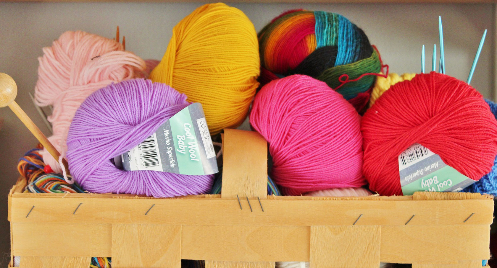

<% var images = tempImage.images(paginator.pageNo,paginator.pageSize); %>


<table>
	<tr>
		<% for(item in images.list){ %>
			<td>
				
				<p><a href="${BASE_PATH }album/image/img/${item.id}.html" target="_blank">${item.name}</a></p>
			</td>
		<% } %>
		<!--<td>
			
			<p><a href="#">纯羊毛毛线球</a></p>
		</td>
		-->
	</tr>
	<tr>
		<td>
			
			<p><a href="#">纯羊毛毛线球</a></p>
		</td>
		<td>
			
			<p><a href="#">纯羊毛毛线球</a></p>
		</td>
		<td>
			
			<p><a href="#">纯羊毛毛线球</a></p>
		</td>
		<td>
			
			<p><a href="#">纯羊毛毛线球</a></p>
		</td>
	</tr>
</table>
<p class="pageBtnList">
	<button type="button" class="btn btn-default btn-sm">首页</button>
	<button type="button" class="btn btn-default btn-sm img-circle">上一页</button>
	<button type="button" class="btn btn-default btn-xs">1</button>
	<button type="button" class="btn btn-default btn-xs">2</button>
	<button type="button" class="btn btn-default btn-xs">3</button>
	<button type="button" class="btn btn-default btn-xs">4</button>
	<button type="button" class="btn btn-default btn-xs">5</button>
	<button type="button" class="btn btn-default btn-sm img-circle">下一页</button>
	<button type="button" class="btn btn-default btn-sm">尾页</button>
</p>
<p class="pageBtnList">
	第<span>1</span>页&nbsp;共<span>6</span>页&nbsp;共<span>30</span>条记录
</p>


